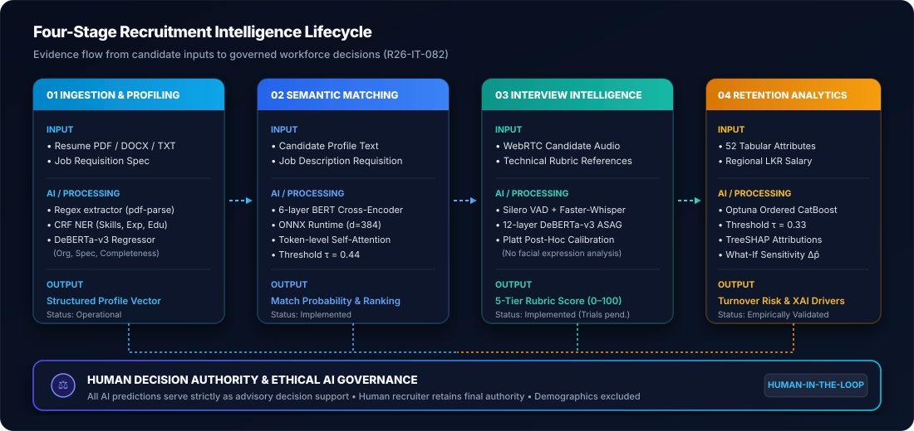

AI-Powered Intelligent
Talent Acquisition System
An integrated multimodal research framework combining multi-format resume parsing, deep cross-encoder semantic matching, speech interview scoring, and explainable workforce retention analytics.
Project Table of Contents & Quick Navigation
The Problem & Our Solution
Addressing severe structural fragmentation in technical hiring through an end-to-end, multimodal artificial intelligence ecosystem.
Conventional Hiring Fragilities
Technical talent recruitment is characterized by severe operational friction. Conventional Applicant Tracking Systems rely on rigid keyword search, ignoring semantic equivalence and rejecting capable engineers who express competencies in alternative phrasing.
Live technical screenings lack standardized, calibrated scoring rubrics, leading to subjective interviewer evaluations. Furthermore, employee turnover is treated as an unpredictable post-hire crisis costing organizations 150%–200% of an annual salary per departure.
Multimodal AI Pipeline
Project R26-IT-082 proposes an integrated multimodal architecture that automates candidate profiling, semantic matching, oral speech assessment, and advisory retention forecasting under strict human governance.
By combining CRF-based entity extraction, a 6-layer BERT Cross-Encoder, Faster-Whisper speech inference with Platt-calibrated DeBERTa-v3 grading, and an Ordered CatBoost model with TreeSHAP explanations, the system provides transparent, data-driven hiring decision support.
Four Core Research Modules
Four specialized research investigations integrated into a unified talent intelligence platform.
Intelligent Resume Parsing & Skill Proficiency
Multi-format document ingestion (PDF, DOCX, TXT) with SpaCy and Conditional Random Fields (CRF NER) to extract skills, tenure, and education, evaluated by a DeBERTa-v3 heuristic quality regressor.
Job–Candidate Semantic Matching & XAI
6-layer BERT Cross-Encoder architecture running on ONNX Runtime to evaluate full sequence-pair token interactions at threshold τ=0.44, providing transparent matching justifications.
AI-Based Interview Evaluation & Soft Skills
WebRTC candidate audio processing via Silero VAD, Faster-Whisper INT8 transcription, and Platt-calibrated 12-layer DeBERTa-v3 short-answer grading across 5 ordinal tiers.
Hiring Attrition Risk & Retention Analytics
Optuna-tuned Ordered CatBoost classifier across 52 tabular features with operating threshold τ=0.33, TreeSHAP attributions, feature ablation study, and policy simulation.
End-to-End Pipeline Blueprint
Evidence flow spanning Candidate Ingestion, Cross-Encoder Matching, Interview Evaluation, Retention Forecasting, and Human Governance.
Recruitment Intelligence Lifecycle
System Architecture & Intelligence Lifecycle Blueprint
Conceptual workflow demonstrating the multi-stage pipeline: candidate ingestion, semantic token scoring, speech inference, CatBoost retention modeling, and human-in-the-loop decision authority.
Academic Roadmap & Progress
Systematic progression from topic approval to final viva voce examination.
Project Proposal
March 2026 • 12% Marks
TAF approved, 4 individual proposals defended, 33 slides presented.
Progress Pres. 1
June 2026 • 15% Marks
50% review covering parser pipeline, audio transcription, baseline models.
Progress Pres. 2
August 2026 • 18% Marks
90% review: threshold tuning (τ=0.33), TreeSHAP, and paper draft.
Final Assessment
October 2026 • 40% Marks
Final thesis volume, 4 dissertation books, and research website.
Viva Voce
November 2026 • 15% Marks
Oral system defense and live 12-container demonstration.